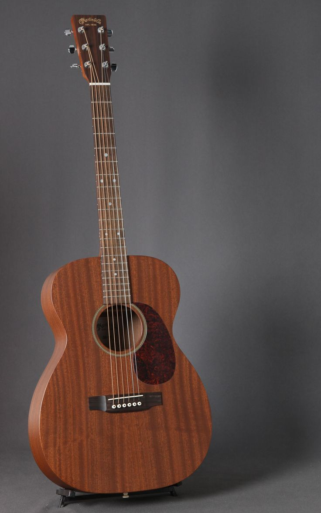

guitar, plucked stringed musical instrument that probably originated in Spain early in the 16th century, deriving from the guitarra latina, a late-medieval instrument with a waisted body and four strings. The early guitar was narrower and deeper than the modern guitar, with a less pronounced waist. It was closely related to the vihuela, the guitar-shaped instrument played in Spain in place of the lute.
The guitar originally had four courses of strings, three double, the top course single, that ran from a violin-like pegbox to a tension bridge glued to the soundboard, or belly; the bridge thus sustained the direct pull of the strings. In the belly was a circular sound hole, often ornamented with a carved wooden rose. The 16th-century guitar was tuned C–F–A–D′, the tuning of the centre four courses of the lute and of the vihuela.From the 16th to the 19th century several changes occurred in the instrument. A fifth course of strings was added before 1600; by the late 18th century a sixth course was added. Before 1800 the double courses were replaced by single strings tuned E–A–D–G–B–E′, still the standard tuning.

The guitar is a stringed musical instrument that is usually fretted (with some exceptions) and typically has six or twelve strings. It is usually held flat against the player's body and played by strumming or plucking the strings with the dominant hand, while simultaneously pressing selected strings against frets with the fingers of the opposite hand. A guitar pick may also be used to strike the strings. The sound of the guitar is projected either acoustically, by means of a resonant hollow chamber on the guitar, or amplified by an electronic pickup and an amplifier.The guitar is classified as a chordophone, meaning the sound is produced by a vibrating string stretched between two fixed points. Historically, a guitar was constructed from wood, with its strings made of catgut. Steel guitar strings were introduced near the end of the nineteenth century in the United States, but nylon and steel strings became mainstream only following World War II. The guitar's ancestors include the gittern, the vihuela, the four-course Renaissance guitar, and the five-course baroque guitar, all of which contributed to the development of the modern six-string instrument.